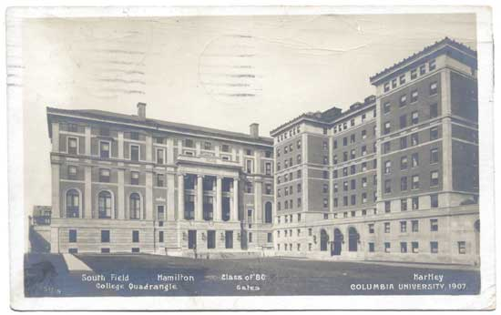

Early life and education
Early life
Mihajlo Pupin was born on 9 October (27 September, OS) 1858 in the village of Idvor (in the modern-day municipality of Kovačica, Serbia) in Banat, in the Military Frontier in the Austrian Empire. He always remembered the words of his mother and cited her in his autobiography, From Immigrant to Inventor (1925):
"My boy, If you wish to go out into the world about which you hear so much at the neighborhood gatherings, you must provide yourself with another pair of eyes; the eyes of reading and writing. There is so much wonderful knowledge and learning in the world which you cannot get unless you can read and write. Knowledge is the golden ladder over which we climb to heaven; knowledge is the light which illuminates our path through this life and leads to a future life of everlasting glory."
Pupin went to elementary school in his birthplace, to Serbian Orthodox school, and later to German elementary school in Perlez. He enrolled in high school in Pančevo, and later in the Real Gymnasium. He was one of the best students there; a local archpriest saw his enormous potential and talent, and influenced the authorities to give Pupin a scholarship.
Because of his activity in the "Serbian Youth" movement, which at that time had many problems with Austro-Hungarian police authorities, Pupin had to leave Pančevo. In 1872, he went to Prague, where he continued the sixth and first half of the seventh year. After his father died in March 1874, the sixteen-year-old Pupin decided to cancel his education in Prague due to financial problems and to move to the United States.
"When I landed at Castle Garden, forty-eight years ago, I had only five cents in my pocket. Had I brought five hundred dollars, instead of five cents, my immediate career in the new, and to me perfectly strange, land would have been the same... It is no handicap to a boy immigrant to land here penniless; it is not a handicap to any boy to be penniless when he strikes out for an independent career, provided that he has the stamina to stand the hardships that may be in store for him."
Studies in America and Ph.D
For the next five years in the United States, Pupin worked as a manual laborer (most notably at the biscuit factory on Cortlandt Street in Manhattan) while he learned English, Greek and Latin. He also gave private lectures. After three years of various courses, in the autumn of 1879 he successfully finished his tests and entered Columbia College, where he became known as an exceptional athlete and scholar.
A friend of Pupin's predicted that his physique would make him a splendid oarsman, and that Columbia would do anything for a good oarsman. A popular student, he was elected president of his class in his Junior year. He graduated with honors in 1883 and became an American citizen at the same time.
He obtained his Ph.D. at the University of Berlin under Hermann von Helmholtz and in 1889 returned to Columbia University to become a lecturer of mathematical physics in the newly formed Department of Electrical Engineering. Pupin's research pioneered carrier wave detection and current analysis.
Pupin completed his studies in 1883 as one of the best students, especially in the field of physics and mathematics. Later he continued his education at the University of Cambridge (1883–1885), before returning to scientific research in the United States.
He became an early investigator into X-ray imaging. Using a vacuum tube and later an Edison fluorescent screen, he succeeded in reducing X-ray exposure time from one hour to only a few minutes. His work demonstrated the existence of secondary X-rays and greatly improved medical radiography. Pupin was the first person to use a fluorescent screen to enhance X-rays for medical purposes.
A New York surgeon, Dr. Bull, used Pupin's method to obtain an X-ray image of a patient's hand before surgery to remove lead shot from a shotgun injury. The improved technique produced a clear image in only a few seconds and allowed the operation to be performed successfully.
